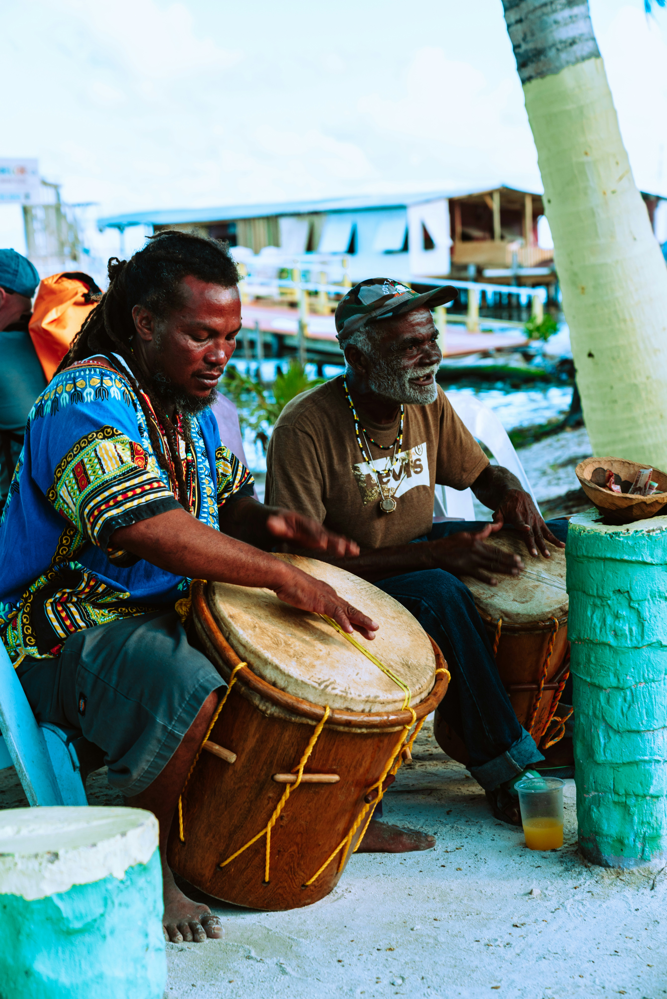
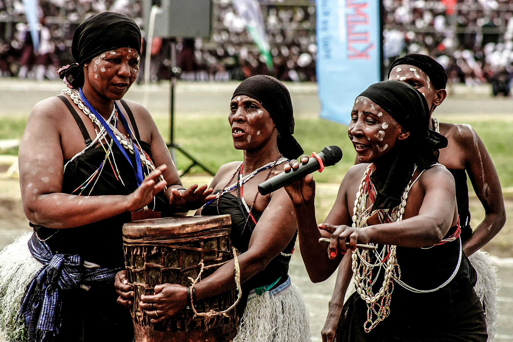

An evening of drumming in the village
On an ordinary evening, young people in the village gather to drum, sing and dance, and the whole crowd joins in.
Sounds of the Smiling Coast
In The Gambia, history is not only written down, it is played and sung. Drums welcome guests, the kora fills the evening, and griots keep family stories alive.
Watch & listen01 · Watch
Moments of music filmed at gatherings across The Gambia.
On an ordinary evening, young people in the village gather to drum, sing and dance, and the whole crowd joins in.
At a naming ceremony in town, a griot honours the family by telling their history to the guests or to family members.
At a naming ceremony, Soninke artist Demba Tanja sings about the history of the Soninke people, accompanied by traditional music.
02 · Listen
Put your headphones on and listen to stories told the traditional way.
Griot Ganda Fadiga recounts a family's history the traditional way, in the Soninke language. Recorded in a village more than five years ago.
Lallo Kebba tells a story in Mandinka while the kora plays underneath, the way griots have shared stories for generations.
03 · Look closer
Instrument that calls people to gather, sing and share stories together.



04 · Before you go
A few tips for when you hear music during your trip.
You'll hear drumming and singing in towns, villages and the capital. If you hear music, follow it.
Clapping and dancing along is welcome. People are happy to show you the moves, so just copy them and enjoy it.
Visitors are welcome to take photos and film. A smile or a nod to the musicians first is always appreciated.
If you enjoyed the music, you can give the musicians or griot some money or a small gift. It's not required, but it's a kind way to say thank you.